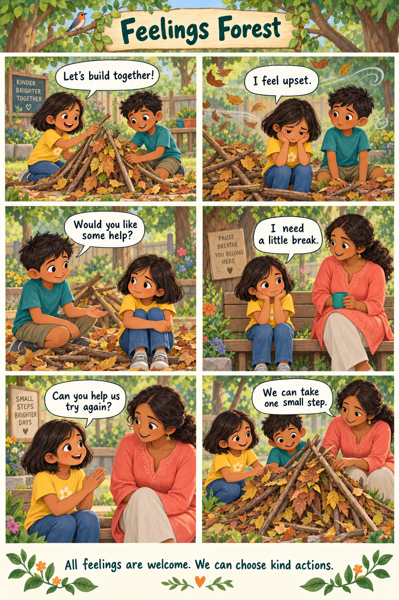

Ages 6–8 · With a teacher or grown-up · 35 minutes
Welcome to Feelings Forest.
A fallen leaf shelter. Two friends. One small next step. A story-led adventure about feelings, kindness and asking for help.
School demonstration edition · No account needed · No answers sent or saved.
01 / Story time
A shelter for every feeling

Read the accessible story transcript
Mira and Dev collected fallen leaves in their school garden. “Let’s build together!” said Mira. They made a tiny shelter for a toy animal.
Whoosh! A breeze blew the roof down. “I feel upset,” said Mira. Her hands felt tight. Dev felt surprised. Two people can feel different things about the same moment.
“Would you like some help?” asked Dev. Mira shook her head. Dev gave her space. Helping can mean listening, too.
“I need a little break,” said Mira. She sat on a nearby bench where their teacher could see her. She noticed her feet touching the ground. She did not have to make the feeling disappear.
When she was ready, Mira asked their teacher, “Can you help us try again?” Together they chose a smaller roof.
“We can take one small step,” said Dev. Mira was still a little disappointed, and she was ready to try. All feelings are welcome. We can choose kind actions.
02 / Read-aloud storyboard
Bring the forest to life
Use the comic with the narration below. This is a video production script, not a finished animated film. Pause for children to point, speak or pass.
Open the four-minute video script
0:00–0:35 · The plan
Visual: pan across the garden to Mira and Dev arranging fallen leaves. Narrator: “Mira and Dev had a plan: a cosy shelter for their toy. Have you ever made something with a friend?” Pause for 8 seconds. Mira: “Let’s build together!”
0:35–1:10 · The surprise
Visual: a gentle breeze scatters the roof. No loud sound effect. Mira: “I feel upset.” Narrator: “Mira noticed tight hands. Dev felt surprised. Feelings can be different. What might Mira be feeling? You can point, say a word, or pass.” Pause for 8 seconds.
1:10–1:45 · Listening
Dev: “Would you like some help?” Mira: “Not yet.” Narrator: “Dev listened and gave her space. We can offer help without making someone take it.” Visual: Dev waits nearby, leaving space.
1:45–2:25 · A little pause
Mira: “I need a little break.” Visual: she sits on a bench near the teacher. Narrator: “Mira noticed her feet on the ground. You can notice your feet or hands, too—or simply watch. A pause is a choice. Feelings do not have to vanish.” Pause for 10 seconds. Eyes stay open; no breath-holding.
2:25–3:10 · Asking for help
Mira: “Can you help us try again?” Teacher: “Yes. Shall we try a smaller roof?” Narrator: “A trusted adult can help. If someone is hurt or unsafe, ask a trusted adult straight away.” Visual: teacher joins at child height.
3:10–4:00 · One small step
Dev: “We can take one small step.” Narrator: “Mira still felt a little upset. She could feel upset and choose a kind action. What could you say to a friend whose model fell down?” Pause for 10 seconds. Closing card: “Notice a feeling. Choose a pause. Ask for help.” Narrator: “All feelings are welcome. We can choose kind actions.”
03 / Play & practise
Small activities. Big discoveries.
Feeling detectives
Draw four faces: happy, sad, worried and angry. Read: “A character’s tower falls over.” Children may point to any feeling and explain, or pass. More than one answer can make sense.
5 minutes · Paper and crayons · Drawing or verbal answers
The kindness choice
In pairs, practise: “Would you like help, some space, or a grown-up?” The partner chooses. Swap roles using a fictional character. No one has to describe their own experience.
4 minutes · Seated or standing · Adult can model both roles
One small step
Draw a shelter on paper. Pretend the roof needs changing. Choose one next step: pause, ask for help or try a different shape. Explain or point to the choice.
3 minutes · No outdoor trip or physical contact needed
Family invitation: Ask a grown-up to invent a story about a toy having a tricky day. Together choose one kind action. This is optional; no photograph or personal story is required.
04 / Learning check
What could our friends do?
Choose an answer together. Try again as often as you like. This checks the story, not anyone’s feelings.
05 / Celebrate participation
You explored together.
No pass mark is required. An adult can recognise participation through listening, pointing, drawing or supported answers.
Echonflow WonderWell
Feelings Forest Explorer
Certificate of participation
Awarded to: ____________________
For exploring feelings, practising kindness and learning how to ask for help.
Learning together counts. Every small step matters.
Date: __________ Grown-up / teacher: __________
Educational participation only · Not a health assessment or accredited qualification.
For teachers & parents
Your 35-minute session
Time
Facilitation
0–5 minutes
Welcome. Explain: “You may speak, point, watch or pass.” Introduce the comic characters.
5–9 minutes
Read the comic using the four-minute storyboard.
9–21 minutes
Try the three activities. Offer drawing, spoken and seated options.
21–29 minutes
Explore the three quiz scenarios, modelling kind answers without ranking children.
29–35 minutes
Review asking for help, offer the optional family activity and recognise participation.
Learning goals, inclusion and safeguarding
Look for whether children can name or recognise a feeling, offer a kind choice, and identify asking a trusted adult as a helpful action. Observe supported participation; do not score wellbeing.
Use fictional examples. Do not require disclosures, touch, closed eyes, breathing exercises or public performances. Do not label feelings as good or bad. Follow the school’s safeguarding procedure if a child raises a concern; do not promise secrecy. This demonstration needs educator and child-development review before wider school delivery.
No child login, name entry, analytics or server submission is used by this sample. Quiz choices stay in the current page and reset when it is reloaded. Write certificate names on paper after printing.
School pilot feedback
Record only class age band, session date, number participating, activities completed, accessibility changes and teacher feedback. Ask: Was the language clear? Could children explain a kind choice with support? Was 35 minutes practical? What should change? Do not submit child names, disclosures or health information.
A completed session and positive school feedback are our proposed indicators for reviewing the pilot. They do not establish clinical effectiveness.
WonderWell is planned for ages 3–12 in three editions. This sample is for ages 6–8 only. Teachers and parents can request pilot details through their existing Echonflow contact. Other editions and the animated film are not yet available.